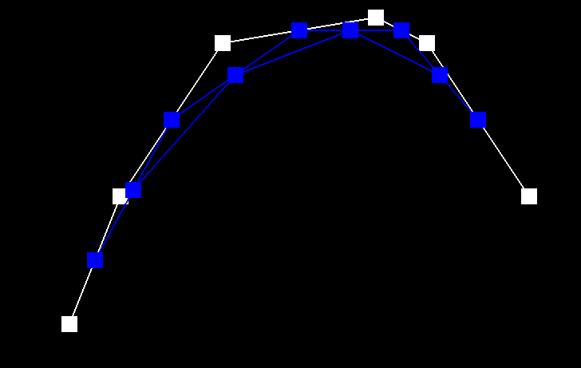
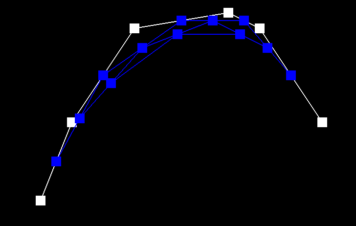

CS 184 Assignment 2
Jason Wang
Write-Up: Part 1
- Casteljau’s algorithm is used to interpolate a curve from a set of line segments. This algorithm takes a set of N line segments and a ratio parameter between 0 and 1 to produce a set of (N-1) line segments. The algorithm is recursively applied until there is a single line segment where a point along that line segment relative to the distance ratio is returned. Evaluating this algorithm from 0 to 1 produces a set of points that map a curve. I implemented this algorithm by iterating through each point at index i and (i+1) with distance ratio t and adding that point to a vector of interpolated points.



Write-Up: Part 2
- Casteljau’s algorithm works almost identically in higher dimensions as it does in 2D. For a N-dimensional curve, (N-1) scalar interpolation parameters are required. To map a 3d surface, for example, a bezier curve is interpolated along one axis for each step along the other axis. This set of points is then used to interpolate the curve in the other axis to produce a set of points that map the final surface. I implemented this algorithm by extending my 2d step algorithm to the 3rd dimension as well as creating a 1D function that recursively applies the stepping function until a single point is returned along an arbitrary axis given a scaling parameter. This 1D function is then iteratively used to produce smooth curves along one axis of the control points. The 1D algorithm is then applied again to these smooth curves along the other axis to finally create a set of points that map the target surface.

Writeup: Part 3
- To Implement area-weighted vertex normals, I iterated through the triangles meshes around a given vertex and summed their area. I calculated the area of each triangle mesh by taking half of the cross product of 2 of the edges. I then returned the normalized sum.

